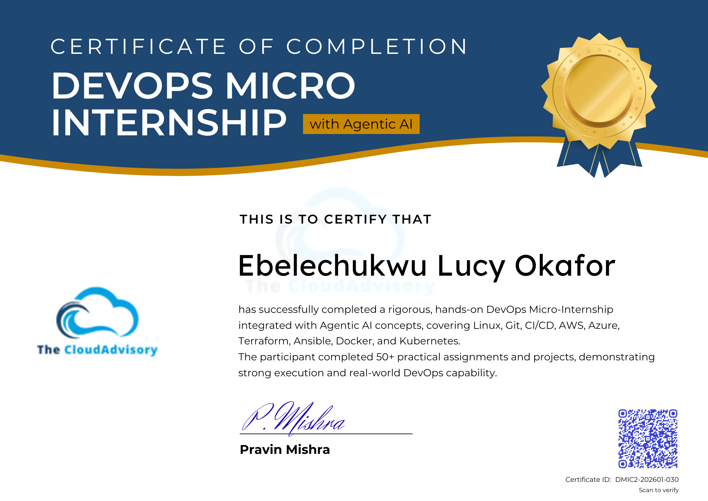
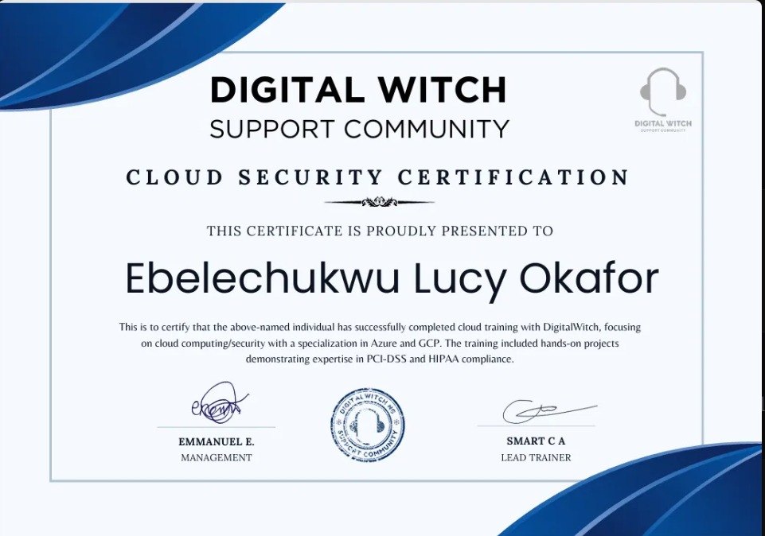

Certifications & Awards
Professional Cloud Security Engineer
Google Cloud Platform
Cloud Security Certification
Digital Witch Support Community · 2024
Champion of the Week — Week 13
DMI Cohort 2 · The Cloud Advisory · 25 April 2026
DMI Certificate of Completion — with Agentic AI
The Cloud Advisory · ID: DMIC2-202601-030 · May 2026
📜 Certificate Gallery
DMI Certificate of Completion

Week 13 Champion — Signed by Pravin Mishra

Digital Witch Cloud Security Certification · 2024

Training & Education
Jan 2026 — May 2026
DevOps Micro Internship (DMI) — Cohort 2
The Cloud Advisory — Remote · with Agentic AI
14-week intensive hands-on programme integrated with Agentic AI concepts. Completed 50+ practical assignments covering the full DevOps lifecycle from Linux fundamentals to production microservices deployment on AWS EKS.
- Linux, Bash scripting, Git and GitHub workflows
- AWS and Azure cloud — core infrastructure and services
- Terraform and Ansible — Infrastructure as Code
- Docker, Docker Compose, and multi-stage image builds
- Kubernetes — Pods, Deployments, Services, HPA, Health Probes
- CI/CD — GitHub Actions and Azure DevOps pipelines
- Observability — Prometheus, Grafana, Zipkin, alerting rules
- Agentic AI in DevOps using KIMCHI agent
- Team Capstone: Spring PetClinic Microservices on AWS EKS
🏆 Champion of the Week — Week 13 | Certificate ID: DMIC2-202601-030
2024
Cloud Security Certification
Digital Witch Support Community — Remote
Intensive cloud computing and security training specialising in Azure and GCP with hands-on compliance projects.
- Cloud computing fundamentals and architecture
- Azure and GCP — security services and best practices
- PCI-DSS and HIPAA compliance — hands-on implementation
- Cloud security across multi-cloud environments
→ First step in my transition from executive administration into tech
University
University Education
Nigeria
Anambra State University, Uli. Second Class Upper (2.1) Bsc in Marketing.
Work History
2026 — Present
Cloud & DevOps Engineer
Freelance — EMEA Clients (Remote)
Building and operating cloud infrastructure for clients across Fintech, SaaS, Healthtech, and E-commerce sectors in EMEA markets including UK, Germany, UAE, Netherlands, Ireland, France, and Sweden.
- Docker containerisation and image optimisation
- Kubernetes deployments on EKS and GKE
- Terraform infrastructure as code on AWS and Azure
- CI/CD pipeline design using GitHub Actions and Azure DevOps
- Observability — Prometheus, Grafana, Datadog, Zipkin
- Cloud security — GCP, Azure, AWS IAM
Before 2024
Executive Assistant / Administrator
Various Organisations — Nigeria
Over 6 years of executive-level administrative experience supporting senior leadership and managing complex operational workflows across multiple organisations.
- Managed executive calendars, board-level communications, and high-priority documentation
- Coordinated international travel, events, and cross-departmental projects
- Maintained and improved administrative processes for senior leadership teams
- Built strong skills in communication, organisation, stakeholder management, and working under pressure
→ Deliberately transitioned into cloud computing in 2024
Technical Skills
☁️ Cloud Platforms
- AWS (EC2, S3, EKS, ECR, IAM, RDS, VPC, ALB, ASG)
- Microsoft Azure
- Google Cloud Platform
🐳 Containers
- Docker
- Docker Compose
- Multi-Stage Builds
- ECR
- Image Tagging
☸️ Kubernetes
- kubectl
- kind
- Helm
- Deployments
- Services
- HPA
- Health Probes
🏗️ Infrastructure as Code
- Terraform
- Ansible
- Modules
- Remote State
- S3 tfstate
⚙️ CI/CD
- GitHub Actions
- Azure DevOps
- OIDC Auth
- Pipeline Design
📊 Observability
- Prometheus
- Grafana
- Zipkin
- Datadog
- Spring Boot Admin
🤖 Agentic AI
- KIMCHI Agent
- Claude Code
- AI-Assisted IaC
- /ferment Mode
🔐 Security
- PCI-DSS
- HIPAA Compliance
- IAM
- Cloud Armor
- Private Networking
💻 OS & Tools
- Linux (Ubuntu, Alpine)
- Bash
- WSL2
- Git
- VS Code
- GitHub Codespaces
- Maven
DMI Curriculum Completed
Weeks 0–5: Foundations
- Internet & Networking Basics
- Success Mindset & Career Planning
- Agentic AI with Claude Code
- Linux for DevOps
- Bash Scripting & Automation
- Git & GitHub Workflows
Weeks 6–10: Cloud & IaC
- DevOps Lifecycle & Agile
- AWS Cloud — Core Services
- Azure Cloud — Fundamentals
- Terraform — IaC & Modules
- Ansible — Configuration Management
Weeks 11–14: Deployment
- Azure DevOps CI/CD Pipelines
- Docker & Containerisation
- Kubernetes — Cluster Management
- Agentic AI in DevOps (KIMCHI)
- Final Project — Spring PetClinic on EKS